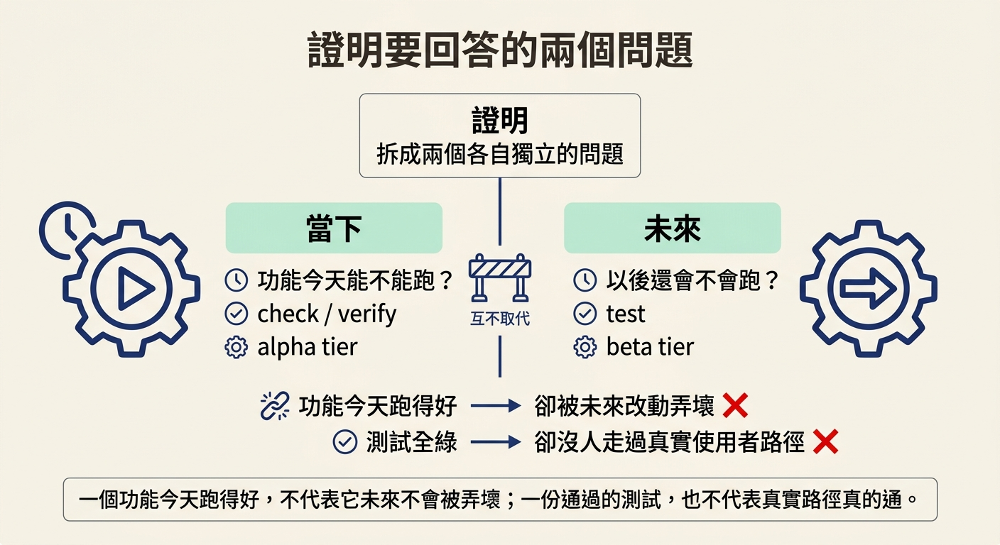
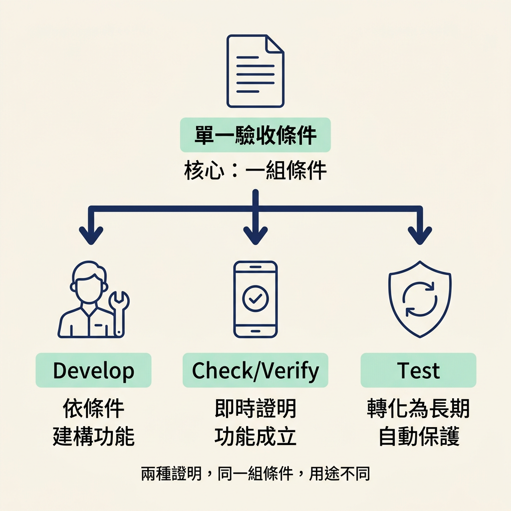

講清楚證明要回答的兩個不同問題——「這個功能今天能不能跑」與「以後還會不會跑」——並各自對到一個 skill 與一個 tier（check verify／alpha、test／beta）。
上一節我們把門檻從「做完」抬到「被證明」，方法就是把 app 跑起來、照使用路徑走一遍。那一刻你確實看到功能會動了。可是走出這個畫面，另一個念頭很快就會冒出來：下週還會有人改這段程式，到時候它還會動嗎？
這兩個念頭，其實是兩個不同的問題。第一個問題問的是當下——這個功能今天能不能跑；第二個問題問的是未來——以後還會不會跑。課程把它們分得很清楚，因為要回答它們，需要的是兩種不同的證明。
課程一開始就把這件事講白了：證明的重點不是「有沒有做」，而是去回答兩個各自獨立的問題。
And there are two kinds of proof, and they answer two different questions. Does the feature work today, and will it keep working later?
「今天能不能跑」與「以後還會不會跑」，看起來很像同一件事的兩種說法，其實不是。一個功能今天跑得好，不代表它未來不會被別人的改動弄壞；反過來說，一份通過的測試，也不代表真實使用者走的那條路真的通。兩者要分開處理。

第一個問題由 check verify 回答。它的做法是打開 app，把功能拿來對照它的驗收條件實際跑一遍。這裡有個容易誤會的地方：它檢查的不是「程式碼能不能編譯」，也不是「某個測試檔有沒有通過」，而是更前面的一步——
It doesn't only check whether the code builds or whether a test file passes. It checks whether the promised behavior actually happens in the running product.
「在跑起來的產品裡，承諾的行為真的發生了嗎」——這正是上一節實跑所做的事。通過這個問題的功能，代表它已經被證明會動。課程給了它一個名字：
This is the alpha tier.
（這就是 alpha 這個層級。）
第二個問題由 test skill 回答。它存在的理由很短，但很現實：程式碼會一直改，而某一次未來的改動，可能悄悄弄壞一個今天還好好的功能。
Because code keeps changing, and a future change can quietly break something that worked before.
想像你把留言 pin 做好了、也驗證過會動。兩週後有人改了一段 unread 計數的邏輯，順手動到相關的資料流，pin 的編號悄悄開始跳號——但沒有人當場打開 app 去點，所以沒有任何人發現。測試的用途，就是在這種時候先把問題攔下來：它把「這個行為必須一直成立」寫成可重複執行的檢查，日後每次改動都會重新確認一次。
課程特別強調，這不是額外發明出來的花招，而是把真實軟體保護起來的標準做法——「the same way any engineering team protects real software」。通過這個問題的功能，就進到更上一層：
That is beta tier.
（那就是 beta 這個層級。）
到這裡，prototype、alpha、beta 三個名詞就串成一條線了。它們不是三種不同的功能，而是同一個功能被證明到什麼程度的三個水位：
| Tier | 代表什麼 | 回答了哪個問題 | 由誰負責 |
|---|---|---|---|
| prototype | 建好，而且自己檢查過 | （還沒被證明） | develop |
| alpha | 建好，而且被證明會動 | 今天能不能跑 | check verify |
| beta | 建好、被證明，而且被保護 | 以後還會不會跑 | test |
用一句話記住三個水位：課程最後這樣收尾——「Prototype means built and self-checked. Alpha means built and proven, and beta means built, proven, and protected.」一個功能往上爬一階，代表它多拿到一份證明，而不是換了一套功能。
還有一個細節值得記住：這兩種證明並不是各自發明標準，它們其實都從同一份文件出發——architect 幫你寫下的驗收條件（acceptance criteria）。
Develop builds them. Check verify proves them in the running app. And the test turns the important ones into the lasting protection.
把這三句連起來看就很清楚：develop 依照驗收條件把功能建出來；check verify 在跑起來的 app 裡證明這些條件真的成立；test 則把其中重要的那幾條，轉成日後會自動反覆檢查的長期保護。同一組條件，在三種階段各有各的用途。

把兩個問題、兩種 skill 放在一起對照，可以整理成一張簡單的表：
check verify <feature> # 當場跑一次，證明「今天會動」 → alpha test <spec> # 寫成可重複執行的檢查，保護「以後還會動」 → beta
證明要回答的其實是兩個不同的問題：「這個功能今天能不能跑」與「以後還會不會跑」。第一個問題由check verify回答，它打開 app、對照驗收條件實跑一遍，檢查的是跑起來的產品裡承諾的行為有沒有發生——這對應到 alpha tier。第二個問題由testskill 回答，因為程式會一直改，未來的改動可能悄悄弄壞今天還能跑的東西；測試把重要的行為變成會反覆檢查的長期保護——這對應到 beta tier。兩者都從architect寫下的同一組驗收條件出發：develop 建出來、check verify 在 app 裡證明、test 把重要的那幾條保護起來。
既然這是兩種不同的證明，它們之間就會牽涉到一個順序問題：該先做哪一個？如果一份全綠的測試不能取代實跑、實跑也不能取代測試，那兩者到底該怎麼排、又各自在什麼情況下才是對的選擇？下一步就來處理這個決定。